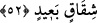

kurtarıp lutuf ve ihsânda bulunduğumuzda, kendini beğenip kibirlenir ve böbürlenir.
Allah’a şükretmez, O’nun lutuf ve ihsânını hatırlamaz. Nimetle meşgul olup mun’im-i
hakîkî olan Allah’ı unutur. O’na itâatten uzaklaşır. Bu şekilde kendini müstağnî görür,
tökezleyip yuvarlanır.
Hâfız şöyle demiştir:
Kanat açıp uçarak yoldan çıkma,
Atılan ok bir süre havada gitse de sonunda düşer.
“Ona bir şer dokundu mu” bu tâat ve şükürden yüz çeviren insana bir belâ ve
musîbet dokunduğunda ise çokça duâ edip yalvarıp durur. Burada mâzî, “izâ” lafzıyla
getirilmiştir. Çünkü bu şerden maksad, meydana gelmesi kesin olan mutlak bir
kötülüktür.
Burada “duâ–i arîz”, “çok duâ etmek, yalvarıp yakarmak” demektir. Bu mânâda;
“falanca kişi sözü uzattı, çoğalttı, enine boyuna durumu arz etti” denilir. Bu ifâde bir
konunun sâhasının geniş ve çokluğundan kinâye olarak kullanılır. Zîrâ geniş olan şeyin o
nispette eczâsı ve uzunluğu da vardır.
Burada genişlik mânâsı, “arîz” kelimesinin nekre oluşundan alınmıştır ki bu nekrelik
tâzîm ve yüceliğe delâlet eder. “Uzaklık” mânâsı ise genişliğin lafzından elde edilmiştir.
Bu “arîz” kelimesi, “uzun” demek olan “tavîl” kelimesinden daha belîğ ve mânidârdır.
Zîrâ “tûl”, “iki uzunluğun en uzunu” demektir. Bir şeyin eni çokça geniş ve kapsayıcı
olunca artık onun uzunluğunu ona göre takdir etmelidir.
Tabiî ki insanların hâli değişik değişiktir. Yukarıda 49. âyette ifâde edildiği gibi
bazısına bir şer dokundu mu hemen ümidsiz ve karamsar olur. Duâ da etmez. Zîrâ
ümidsizlik ve karamsarlık duâya zıt şeylerdir. Duâ ise yine bir arzu ve istekten
kaynaklanmaktadır. Yahut bir şer dokunduğunda böyle yalvarıp durmak zaman zaman her
insanın hâlidir. Yahut bu nankör insan bu durumda puttan ümid kesip Allah’a duâ
etmektedir. Yahut kalben ümidsiz olsa da dilden duâ etmektedir.
52. De ki: Ne dersiniz, eğer o (Kur’an), Allah tarafından ise siz de onu inkâr
etmişseniz o zaman (haktan) uzak bir ayrılığa düşenden daha sapık kim vardır?
“De ki: Gördünüz mü,” söyleyin bakalım “ya o” Kur’ân “Allah tarafından ise ve
siz” Kur’ân’a imânı gerektiren bunca delîle rağmen hiç bakıp düşünmeden ve hiçbir
delîle dayanmaksızın “onu inkâr etmişseniz, o zaman uzak bir ayrılığa düşen” siz
“den daha sapık kim olabilir?”